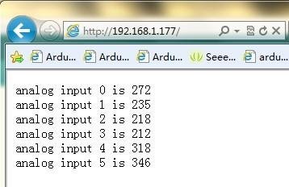

Seeeduino Ethernet is a compact and multifunctional development platform, which merges data logging and processing, device control and Ethernet communication together into one. It's armed with a MEGA328P chip and a Wiz5100: the former provides an Arduino controlling style and the latter provides TCP and UDP Ethernet communication ability. Plus integrated SD card module, it's convenient and neat for remote data logging, processing or transferring via network. In this version, we lowered the height of RJ45 to balance it with the headers. Besides, with an I2C and a UART Grove port populated,it's convenient to connect corresponding Grove modules to this board.
We will test the Seeeduino Ethernet functions of writing or reading information from the SD Card and sending out A/D data to network.
Firstly, install the hardware. We have two alternatives to plug in the power.
Method 1: You can use one Passive PoE Cable Set to provide power and Ethernet connection at the same time like the picture below.
Method 2: Use separate power cable and Ethernet cable.
After hardware installation, here we continue to try the test code. This program is written to test the functions of writing or reading data from the SD Card and sending out A/D data to network. This demo code can be used as a test program as well as reference if you wanna explore more functions of the board.
NOTICE:
1. All the ".h" file needed have been pre-installed in Arduino IDE(1.0).
2. Install a Micro SD card. Make sure the Micro SD card is not full and the format is FAT or FAT32.
/* SD card read/write This example shows how to read and write data to and from an SD card file The circuit: * SD card attached to SPI bus as follows: ** MOSI - pin 11 ** MISO - pin 12 ** CLK - pin 13 ** CS - pin 4 Web Server A simple web server that shows the value of the analog input pins. using an Arduino Wiznet Ethernet shield. Circuit: * Ethernet shield attached to pins 10, 11, 12, 13 * Analog inputs attached to pins A0 through A5 (optional) created 18 Dec 2009 by David A. Mellis modified 4 Sep 2010 by Tom Igoe */ #include <SD.h> #include <SPI.h> #include <Ethernet.h> // Enter a MAC address and IP address for your controller below. // The IP address will be dependent on your local network: byte mac[] = { 0xDE, 0xAD, 0xBE, 0xEF, 0xFE, 0xED }; IPAddress ip(192,168,1,177); // Initialize the Ethernet server library // with the IP address and port you want to use // (port 80 is default for HTTP): EthernetServer server(80); File myFile; void setup() { Serial.begin(9600); Serial.print("Initializing SD card..."); // On the Ethernet Shield, CS is pin 4. It's set as an output by default. // Note that even if it's not used as the CS pin, the hardware SS pin // (10 on most Arduino boards, 53 on the Mega) must be left as an output // or the SD library functions will not work. pinMode(10, OUTPUT); // pinMode(4,OUTPUT); if (!SD.begin(4)) { Serial.println("initialization failed!"); return; } Serial.println("initialization done."); // open the file. note that only one file can be open at a time, // so you have to close this one before opening another. myFile = SD.open("test.txt",FILE_WRITE); // if the file opened or created okay, write to it: if (myFile) { Serial.print("Writing to test.txt..."); myFile.println("testing 1, 2, 3."); // close the file: myFile.close(); Serial.println("done."); } else { // if the file didn't open, print an error: Serial.println("error opening test.txt"); } // re-open the file for reading: myFile = SD.open("test.txt"); if (myFile) { Serial.println("test.txt:"); // read from the file until there's nothing else in it: while (myFile.available()) { Serial.write(myFile.read()); } // close the file: myFile.close(); } else { // if the file didn't open, print an error: Serial.println("error opening test.txt"); } // start the Ethernet connection and the server: Ethernet.begin(mac, ip); server.begin(); } unsigned char buff[6]; void loop() { EthernetClient client = server.available(); if (client) { // an http request ends with a blank line boolean currentLineIsBlank = true; while (client.connected()) { if (client.available()) { char c = client.read(); // if you've gotten to the end of the line (received a newline // character) and the line is blank, the http request has ended, // so you can send a reply if (c == '\n' && currentLineIsBlank) { // send a standard http response header client.println("HTTP/1.1 200 OK"); client.println("Content-Type: text/html"); client.println(); // output the value of each analog input pin for (int analogChannel = 0; analogChannel < 6; analogChannel++) { client.print("analog input "); client.print(analogChannel); client.print(" is "); client.print(analogRead(analogChannel)); client.println("<br />"); buff[analogChannel] = analogRead(analogChannel); } break; } if (c == '\n') { // you're starting a new line currentLineIsBlank = true; } else if (c != '\r') { // you've gotten a character on the current line currentLineIsBlank = false; } } } // give the web browser time to receive the data delay(1); // close the connection: client.stop(); myFile = SD.open("test.txt", FILE_WRITE); if (myFile) { Serial.println("test.txt:"); for (int analogChannel = 0; analogChannel < 6; analogChannel++) { myFile.print("analog input "); myFile.print(analogChannel); myFile.print(" is "); myFile.println(analogRead(analogChannel)); } // read from the file until there's nothing else in it: myFile.close(); } else { // if the file didn't open, print an error: Serial.println("error opening test.txt"); } myFile = SD.open("test.txt"); if (myFile) { Serial.println("test.txt:"); // read from the file until there's nothing else in it: while (myFile.available()) { Serial.write(myFile.read()); } // close the file: myFile.close(); } else { // if the file didn't open, print an error: Serial.println("error opening test.txt"); } } }
Because there is no USB connector on the board. Seeeduino Ethernet requires a UartSBee to download the program.
Connect the UartSBee to Seeeduino Ethernet as below:
NOTICE: Make sure the Seeeduino Ethernet and your computer are in the same local area network. After the program was downloaded, open the Serial Monitor. You will check the status of the board.
Open a web browser and enter the web address:192.168.1.177, then you can check the data sent out by Seeeduino Ethernet:
